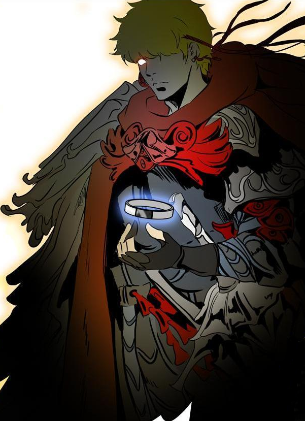

Jyu Viole Grace
Jyu Viole Grace the Slayer candidate has first been seen on the 20th floor. Now he's exact whereabouts are unknown. Many of FUGs believe that he ....
Who's Zahard?
Zahard (or "Jahad") is the famed "King of the Tower" and the most famous and greatest being residing inside; he is like a god to the inhabitants of the Tower.He is a High Ranker, currently retaining ....
Zahard's Kingdong is Crippling
Zahard has been ruling the tower for thousands of years. But who could have thought that ....
The King's Newest Order is the start of a WAR
The King's newest order has been controversial. Only two from three orders have been shared publicly. Many believe that it contains ....